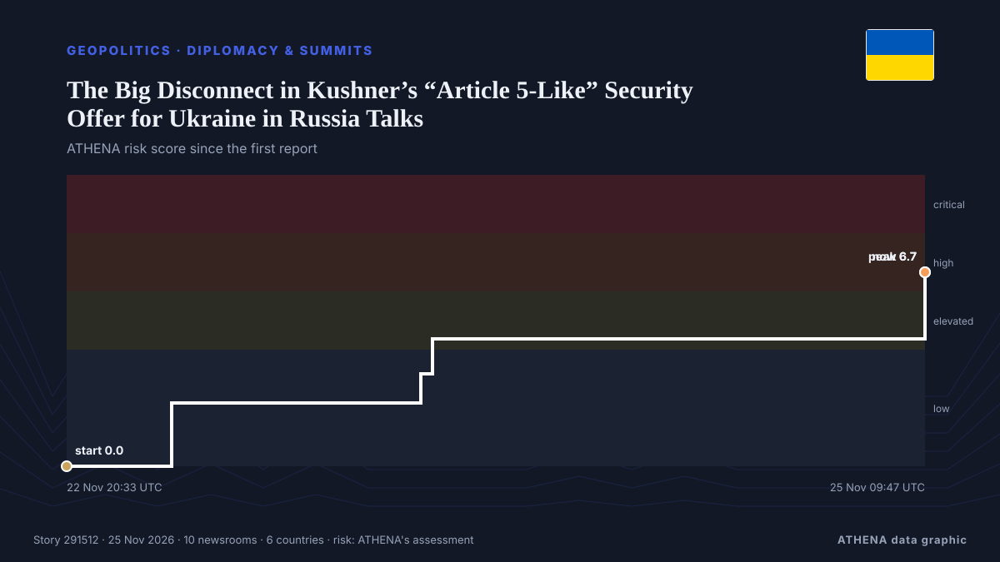

Διπλωματία & σύνοδοι
ΧορηγούμενοΠαρουσιάζεται από  Cybernetics and Artificial Intelligence Lab Welcome to the Cybernetics and Artificial Intelligence Laboratory, established at the Department of Business Administration of the National and Kapodistrian University of Athens. The lab is headed by Professor Dimitrios Thomakos. The lab aims to do research that can be published in top venues. Our research uses tools and methods of Artificial Intelligence, and lies in the following areas: - Forecasting - Decision making - Cyber security - Finance We are always looking forward to collaborating with exceptional students!
Cybernetics and Artificial Intelligence Lab Welcome to the Cybernetics and Artificial Intelligence Laboratory, established at the Department of Business Administration of the National and Kapodistrian University of Athens. The lab is headed by Professor Dimitrios Thomakos. The lab aims to do research that can be published in top venues. Our research uses tools and methods of Artificial Intelligence, and lies in the following areas: - Forecasting - Decision making - Cyber security - Finance We are always looking forward to collaborating with exceptional students!
| 12 Νοε | 0 |
|---|---|
| 13 Νοε | 0 |
| 14 Νοε | 0 |
| 15 Νοε | 0 |
| 16 Νοε | 2 |
| 17 Νοε | 1 |
| 18 Νοε | 0 |
| 19 Νοε | 2 |
| 20 Νοε | 1 |
| 21 Νοε | 2 |
| 22 Νοε | 7 |
| 23 Νοε | 7 |
| 24 Νοε | 1 |
| 25 Νοε | 0 |
Οι τίτλοι των ειδήσεων παρουσιάζονται στα αγγλικά, όπως δημοσιεύτηκαν.

The Big Disconnect in Kushner’s “Article 5-Like” Security Offer for Ukraine in Russia Talks
U.S. Envoy Jared Kushner's outline for Ukraine's postwar security could work, but the administration's actions and rhetoric are undermining its prospects. από Just Security
Erdoğan plans first Libya visit in 15 years as unity talks stall
Turkish President Recep Tayyip Erdoğan is expected to visit Libya for the first time in 15 years in December as Turkey steps up contacts with the country’s rival administrations and a US effort to… από Turkish Minute
Ireland hit with more bomb threats as security preparations ramp up for EU summit
Dublin is preparing for the largest gathering of heads of state and government ever hosted by Ireland. από TheJournal.ie
Iran summons Qatari diplomat over joint statement
Iran summons Qatar's charge d'affaires to protest a joint statement with Germany accusing Tehran of regional threats and backing the Houthis. από The New Arab
US army says detonation of lead explosives in Iowa will proceed
Public outcry led to a legal battle when details of the plans to conduct two controlled detonations surfaced. από Al Jazeera English
Kenya and DR Congo agree to restore diplomatic ties after tensions over conflict
By Nana Karikari, Senior International Affairs and Political Analyst Kenyan President William Ruto and Democratic Republic of Congo President Felix Tshisekedi agreed on Sunday to restore full… από GBC Ghana Online
Qatar PM looks to revive US-Iran talks after meeting Rubio
Qatar’s Prime Minister says he’s working towards deescalating tensions between Iran and the US. από Al Jazeera English
China, US and Russia leaders pledge to boost refined fuel output
Three nations commit to raise fuel supply Declaration lays out areas of cooperation China, the US and Russia plan to. από Cyprus Shipping News
UN Chief Calls for Global AI Risk Framework Within a Year
UN Secretary-General Antonio Guterres on Monday, Nov. από Kyiv Post
India pledges $1.6bn to Nepal in reset of ties
Nepal’s Prime Minister Balen Shah has repeatedly called for his country to be treated as an equal by its powerful neighbours. από The Island
Zelensky urges four-way peace talks with Russia, Europe and US 'as soon as possible'
Ukrainian President Volodymyr Zelensky is calling for a new round of negotiations involving Ukraine, Russia, the United States and European leaders, saying Kyiv is ready to meet as early as Tuesday. από France 24 English
Ukraine sank Russian corvette Merkury off Libya: Zelenskyy
A Russian Navy guided-missile corvette – assessed to be the Project 20380 Steregushchiy-class warship Merkury – has been engulfed in flames following an explosion in the Libyan port of Benghazi… από Kyiv Post
Fake Trump ribs Carney at press gallery dinner
A Donald Trump impersonator took to the stage at Ottawa's annual Parliamentary Press Gallery Dinner on Saturday, poking fun at Canadian Prime Minister Mark Carney. από The Globe and Mail
Nepal PM Balendra Shah arrives in Delhi for first official visit to India
The PMs of India and Nepal are set to hold talks on Monday, with sources saying the discussion will give 'political direction' to bilateral relations for the coming years. από The Hindu
India announces Rs 15,000 crore for flood-hit Nepal, PM Balendra Shah hails ties 'as firm as Himalayas'
Prime Minister Narendra Modi on Monday announced a package about Rs 15,000 crore for Nepal's post-flood reconstruction and development, saying the two countries are a source of support for each other… από Deccan Herald
Kim Jong Un ignores Trump outreach as North Korea expands its nuclear arsenal
Trying to reach Kim Jong Un, White House officials stationed a team outside North Korea’s mission to the United Nations in Manhattan to slip a personal note from Donald Trump into a passing… από Tehran Times
US Intelligence Chief Says Putin Is 'Not America's Friend In Ukraine'
Trump’s description of Putin as a friend during the APEC summit drew criticism from European allies of Ukraine. από The Straits Times
‘Just wrong’: British right distances itself from Trump after Putin ‘friend’ post
Reform deputy leader calls Russian leader ‘a murderous dictator’ after US president appears to endorse him UK politics live – latest updates Reform UK and the Conservatives have distanced themselves… από The Guardian
Iran’s seven conditions basis for reopening Strait of Hormuz, negotiations: Araghchi
Foreign Minister Abbas Araghchi says the Islamabad Memorandum of Understanding is no longer on the table; rather, Iran’s proposal, also known as 'Seven Conditions' combining US commitments under the… από IRNA (English)